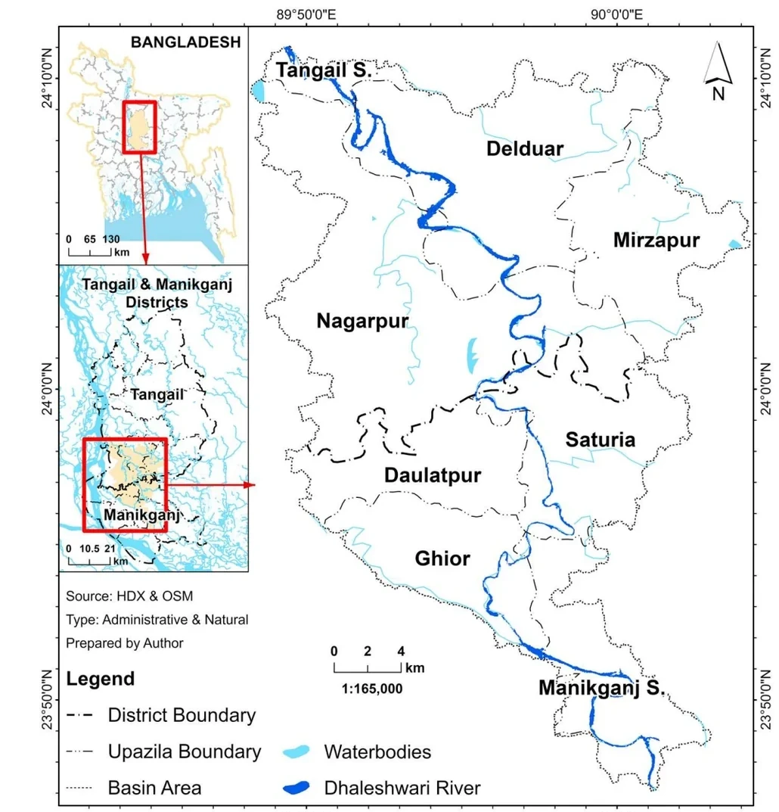
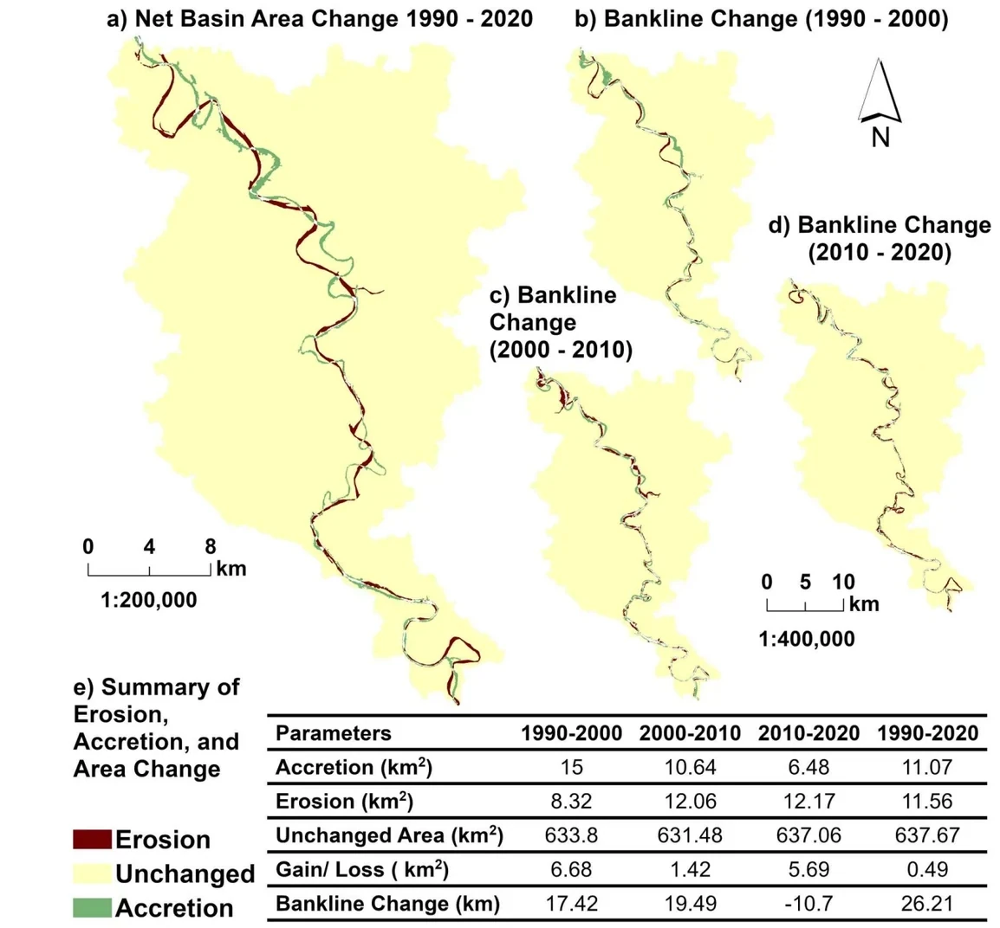
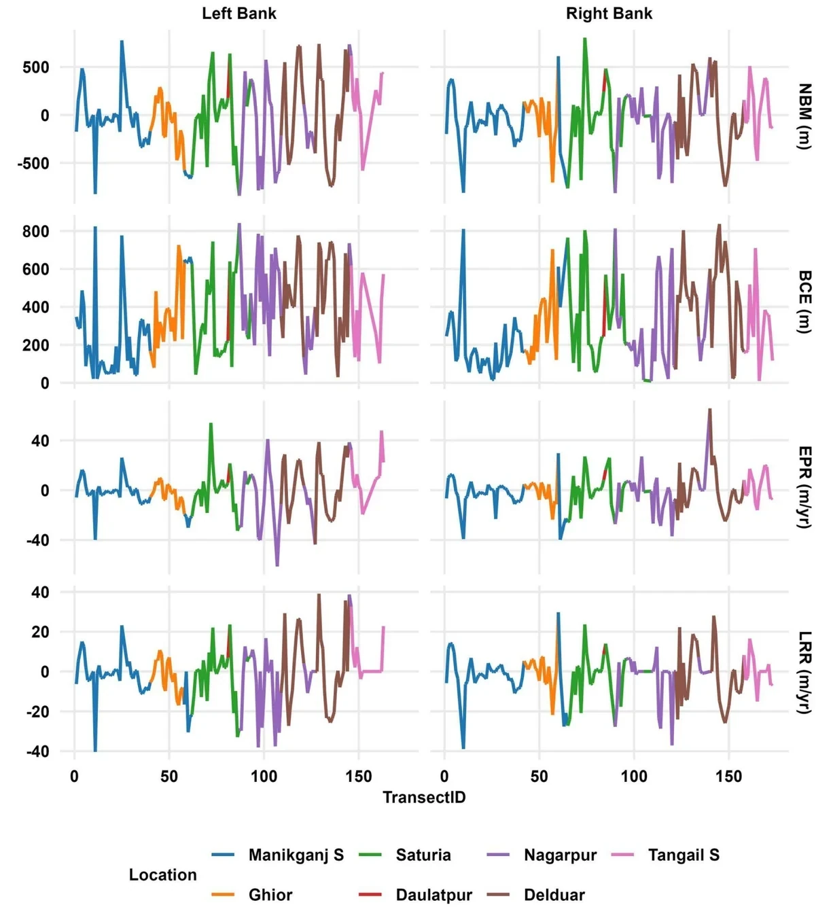

Published · Intl. Journal of River Basin Management, 2026
Understanding Morphological and Hydrological Changes in the Dhaleshwari River Basin
Thirty years of Landsat imagery, DSAS bankline analysis across 307 transects, and hydrological modelling reveal a river that looks geomorphically stable on paper, but is quietly eroding faster than its discharge trends would suggest.
AuthorsMostan, N., Kabir, M. N., Hasan, M. M., Islam, M. M., & Islam, M. A.
JournalIntl. Journal of River Basin Management, 2026
Rivers erode and deposit sediment along their banks constantly, but in deltaic basins like the Dhaleshwari, that dynamism can quietly outpace the planning assumptions built around a "stable" channel. This study maps how the Dhaleshwari's banklines shifted between 1990 and 2020 using multi-temporal Landsat imagery, separates water from land with the Normalized Difference Water Index (NDWI), and digitises banklines as polylines in ArcGIS Pro, cross-checked against Google Earth. Change was then quantified using the USGS Digital Shoreline Analysis System (DSAS v5) across 307 transects on both banks.
Alongside the bankline analysis, the study characterizes the basin's morphometry (drainage network, relief, shape), models 20 years of rainfall–discharge–water level relationships, and tracks land use/land cover (LULC) change and its relationship to vegetation and moisture loss via spectral indices (NDVI, NDWI, NDBI).

Fig. 1: Location map of the Dhaleshwari River Basin, spanning Tangail and Manikganj districts. Source: Mostan, Kabir, Hasan, Islam & Islam (2026).
Major Findings
Channel length grew from 85.7 km (1990) to 111.9 km (2020), peaking at 122.6 km in 2010, with maximum lateral migration of 626.55 m and a Bankline Change Envelope reaching 842 m.
2010–2020 was the highest-erosion decade on record, with 12.17 km² of land lost, concentrated in the Delduar and Manikganj Sadar upazilas; both banks show net erosion overall, with the Right Bank retreating faster and the Left Bank covering a wider migration zone.
Basin morphometry (Hypsometric Integral 0.51; Elongation Ratio 0.37) places the Dhaleshwari in a geomorphically mature, elongated stage that should delay runoff, yet a Melton Ruggedness Number of 1.63 signals high flash-flood risk under intense rainfall.
Peak discharge declined from over 1,100 m³/s to roughly 800 m³/s across two decades, but of all rainfall–discharge–water level relationships tested, only rainfall→discharge was statistically significant (r = 0.37, p = 0.037); water level behaves largely independently, suggesting complex backwater and regulation effects.
LULC change was dramatic: waterbodies shrank to just 17.6% of their 1990 extent, 58.8% of tree cover was converted to built-up land, and vegetation loss tracked moisture loss almost perfectly (ΔNDVI–ΔNDWI correlation of −0.99).
Core argument: despite being structurally stable and geomorphically mature, the Dhaleshwari is functionally highly dynamic. Declining discharge reduces sediment transport, weakening bank materials, so even moderate monsoon flows now trigger disproportionate erosion, compounded by large-scale LULC change that has degraded the river's natural buffering capacity.

Fig. 5: Spatiotemporal riverbank changes and land area dynamics of the Dhaleshwari River Basin (1990–2020): net basin area change, decade-by-decade bankline change maps, and the summary erosion/accretion table behind findings 1–2 above.

Fig. 6: Multi-indicator assessment of bankline change (NBM, BCE, EPR, LRR) along all 307 DSAS transects on both banks (1990–2020), colour-coded by upazila; the transect-level detail behind the divisional averages above.
Recommendations
The study prioritizes erosion hotspots at Delduar and Manikganj Sadar for combined structural and ecological intervention: bioengineering approaches such as vetiver grass planting, bamboo piling, and riparian buffer restoration (proven in the Teesta and Kosi basins), alongside revetments and geobags where annual losses are most severe, basin-scale coordination on sediment budgeting, and community-based erosion monitoring for early warning.